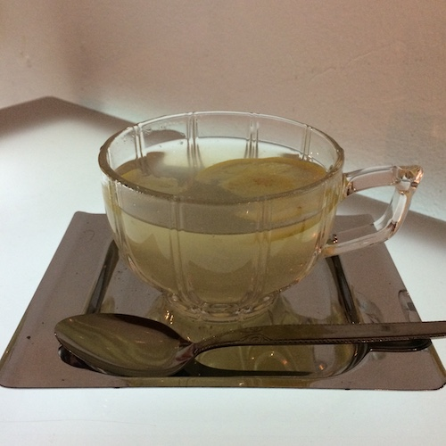
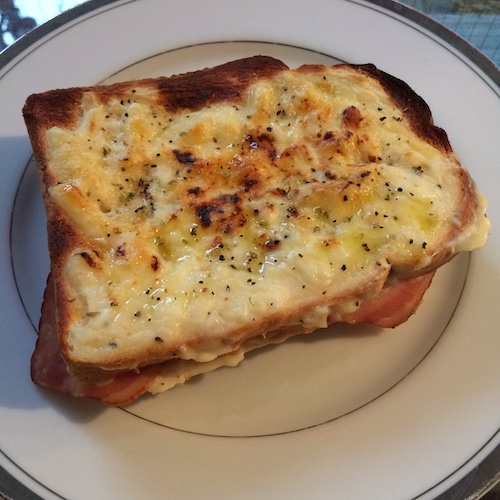
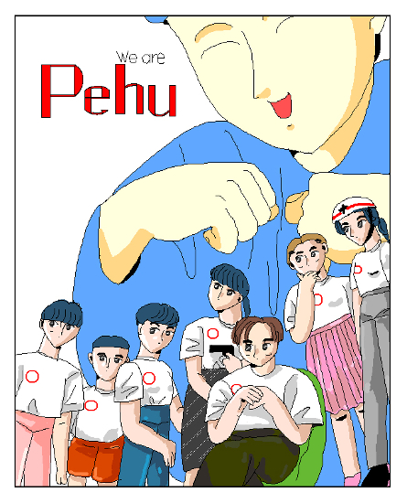
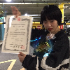

Index of 2019
We are
 Hello
Hello 私たちの目標
私たちの目標 TWS1
TWS1 Menu
Menu HF+S1
HF+S1 MS1
MS1
Hello 私たちの目標 TWS1 Menu HF+S1 MS1
・西天満のペフのはじまりと目標
・西天満のペフの運営メンバーによる３つの企画展の記録
6 PDFs / Total 115 pages
ズッ友
 なかよしフェアー
なかよしフェアー Best Friends from France
Best Friends from France NS1
NS1 Green People
Green People Tongue finishes back at the root of itself
Tongue finishes back at the root of itself 西天満のペフ
西天満のペフ
なかよしフェアー Best Friends from France NS1 Green People Tongue finishes back at the root of itself 西天満のペフ・西天満のペフに滞在した10名のアーティストによる4つのレジデンスプログラム
6 PDFs / Total 196 pages
Peace for Future


・西天満のペフを終えて
5 PDFs / Total 111 pages
レシピ
 ジンジャーシロップ
ジンジャーシロップ-  レモンシロップ
-  ホワイトソース
 ジャパメックス・タコス
ジャパメックス・タコス 四川省風バインミーサンドウィッチ
四川省風バインミーサンドウィッチ マルセイユスタイルモーニングセット
マルセイユスタイルモーニングセット サマーコーンスープ
サマーコーンスープ 白湯
白湯
ジンジャーシロップ ジャパメックス・タコス 四川省風バインミーサンドウィッチ マルセイユスタイルモーニングセット サマーコーンスープ 白湯・レジデンスアーティストなどから伝授された8つのレシピを収録
8 PDFs / Total 58 pages
おまけ
 Archive of pe hu talk
Archive of pe hu talk 食べたもの、ほか
食べたもの、ほか-  manga and something
 Sign
Sign-  Lynx
- 日仏の友情
- 同感覚祭
- 新鑑真と上海
- #magicringmakefriendship
- 理想の一日
- etc.
Archive of pe hu talk 食べたもの、ほか Sign・ペフの運営メンバーによる連載「ペフトーク」「食べたもの、ほか」「manga and something」、 ペフのテーマソング「Sign」の音源など
Archive of pe hu talk by Masamichi Furukawa
- Age of
- GAFA
- 中国AIアナウンサーから考える今後の世界
- 2018 Best
- 千紗子と純太の謎
[Guest: BIOMAN] - ナイスショップスー
[Guest: ナイスショップスー] - お茶会トーク:ちょっと豊かになるモノ・コト/かけた曲
[Guest: seaketa | INDGMSK | thaithefish] - リアル・オーガナイザーが消える未来
食べたもの、ほか by ハマジ(KK manga)
manga and something by ayami konishi
Lynx by Dove
- 作曲/編曲:Dove
- mix/mastering:Le makeup
Sign ペフの歌
- 作曲/編曲:Le makeup
- 作詞:中尾香織 | ささじまかずま
16 PDFs / 2 videos / 2 tracks